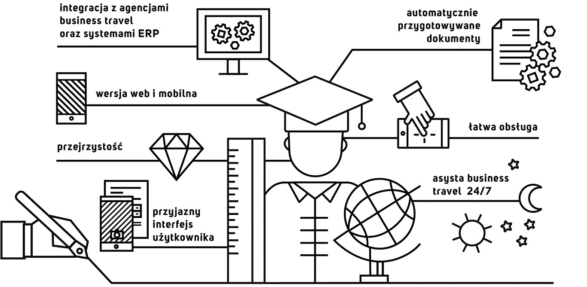

Może to zabrzmieć górnolotnie, ale staramy się spłacić dług wdzięczności. Chcemy oddać tym, od których pozyskaliśmy wiedzę i umiejętności oraz tym, którzy zainspirowali nas do zaangażowania się w nasz biznes. Dlatego przygotowaliśmy specjalną ofertę dla sektora szkolnictwa wyższego. Współpraca z personelem naukowym zwykle wymaga szczegółowej ewidencji kosztowej. Związane jest to z pracą na rzecz wielu jednostek organizacyjnych, niejednokrotnie rozproszonych w wielu lokalizacjach, podczas gdy środki często pochodzą z dużej ilości grantów. Takie warunki wymagają dyscypliny budżetowej i przejrzystości, a przede wszystkim łatwości obsługi dla użytkowników. Wymagania te spełnia nasze rozwiązanie cechujące się:
